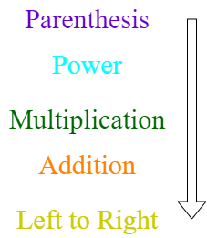
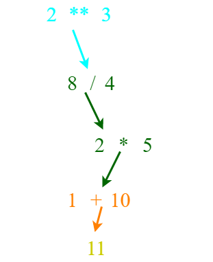

Operator Precedence Rules
Highest precedence rule to lowest precedence rule:
- Parentheses are always respected
- Exponentiation (raise to a power)
- Multiplication, division, and remainder
- Addition and subtraction
- Left to right

>>> x = 1 + 2 ** 3 / 4 * 5
>>> print(x)
11.0
>>>
